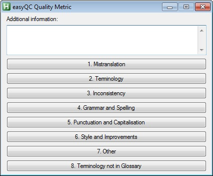

Quality Model
Quality Model
© Rick Schubert
rickschubert@gmx.de
Created with AutoHotkey. Big thanks to the AutoHotkey community, especially to the users "just me", "Fee" and "Helgef".
Please do not share without permission.
Introduction
This tool is meant as a quick way to provide linguistic feedback regarding changes made to translations in the tool SDL Trados Studio. The feedback will simply just be written as a comment to the specific segment, all automated in a consistent approach which helps analysing the problem fields later on.
Logging errors
Simply press - on your numpad to open the quality metric:
Just click on the error category (you can also use a keyboard shortcut) and it will automatically be logged in the comment section. If necessary, you can also enter additional information regarding the mistake which will be logged as well.
Keyboard shortcuts
Hold - on the Numpad and the corresponding category number to quick-assign an error.
Example:
- + Numpad1 = 1. Mistranslation
- + 1 (above the letters) = 1. Mistranslation
If the quality metric is already open, you can press Ctrl together with the corresponding category number on your numpad to quick-assign an error.
Example:
Ctrl + Numpad2 = 2. Terminology
Comment Exporter
This allows you to export all of your comments made into an excel table. This feature can be accessed from the tray menu (right click).
- Locate the sdlxliff files you want to create a list out of (you can select several)
- You will find them usually in the folder My Documents\Studio 2014\[Your project name]\[your language code]
- Select where you want to save the exported list
- The list will automatically open
“Oh no, it does not work!”
I tested this script with a fast Windows 7 PC together with sdlxliff files from SDL Studio 2014 and 2015. Please always remember that the actual process of putting in comments is still just a fast automatisation. It might be possible that different PCs are slower than others and would need minor adjustments of the script so that it “waits” longer. In case something should not work, please write me at rick.schubert@wlt.com
Known issues
- If a segment is completely deleted, the table created via the Comment Exporter will simply display the segment how it has been before the change made. This can be avoided by replacing completely deleted segments with an empty blank. (Alternatively, you can make a note for yourself to amend this in the excel file later on.)
- Line breaks cannot be used into the “additional information” box when logging a mistake. This might be implemented in a future version.
- Please do not change the standard SDL Studio hotkey to insert a comment (Ctrl + Shift + N) as otherwise the comment logging would not work anymore.